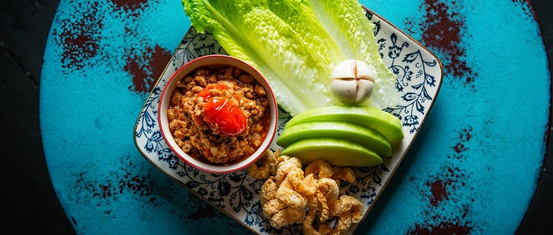

Nam Prik Ong
Home

Description
Nam phrik ong is a popular Thai food in Northern Thailand.
It is often paired with sticky rice, pork and fresh vegetables
such as cucumber, lentils, Chinese cabbage etc.
Ingredients
- Salmon fillet
- Equal parts tomato
- 5-8 tbsp Chili Paste
- Canola Oil
- 2-3 Tbsp Garlic
- 1/2 Cup Water
- Pinch of Sugar
- Chicken Boullion
- Lime Juice
Procedure
- Mince Salmon fillet
- Mince/ Chop tomato
- Mix simon and tomato in bowl
- Add chili paste
- Heat oil in pan
- Add garlic to hot pan
- When slightly brown, add salmon/tomato mixture
- With residual salmon in bowl, add water
- When mostly cooked, add water/salmon mixture
- Add sugar and chicken boullion
- Finish with lime